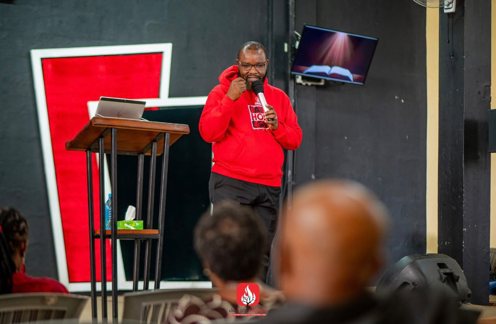

Scripture first
Teaching that stays close to the text and trusts the Word to do its own work in people.
ABOUT
A pastor, a teacher, and a shepherd of people — this is who James Martin Okumu is and what he has given his life to.
James Martin Okumu is a pastor whose ministry rests on a simple conviction: that ordinary people, meeting faithfully in God's presence, can carry extraordinary weight for one another's lives.
Early life and calling
[Where he was born and raised, his family background, his education, and the moment or season in which he sensed God's call to ministry.]
Training and ordination
[Bible school or seminary, who mentored him, when he was ordained, and the churches or ministries he served in his early years.]
"[A sentence in his own words — something he says often, or the verse his ministry is built on.]"
Ministry today
[What he does now — the church or churches he pastors, the daily devotions he teaches, the fellowship he founded, conferences he speaks at, and any books or teaching materials he has published.]
Family
[His wife, children, and where the family is based — include only what he is comfortable sharing publicly.]
AT A GLANCE
Teaching that stays close to the text and trusts the Word to do its own work in people.
A life built on early mornings in prayer — not as an event, but as an ordinary daily rhythm.
Pastoral care that knows names, remembers stories, and stays present long after the sermon ends.
MOMENTS
Photos from services, gatherings and the ordinary work of ministry.

SUPPORT
The work runs on volunteered time and small, faithful gifts. If this ministry has meant something to you, you are welcome to give toward its continued work.
Paybill: 000000
Account: OKUMU
Bank: [Bank name]
Account name: [Account name]
Account number: [Number]
REACH OUT
For speaking invitations, prayer requests, or anything else — send a message below or use the details on the right.